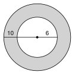
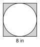
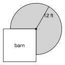

7.2 Area of Circles and Sectors
- Find the area of a circle from its radius or diameter, and find the radius from the area
- Find the area of a sector, and find a missing angle or radius
- Find the area of a ring and of shapes made from circles and other figures
- Use area to solve real problems
Warm-Up
1.
2.
3.
7.2.1Area of a Circle
- Cut a circle into thin wedges. Slide them together. The shape is close to a .
- Its base is half the circumference: 12(2 πr) = . Its height is .
- Area = base · height, so A = .
- Use the , not the diameter. Area is in units.

a. A = πr2 = π(5)2 = ≈
b. r = , so A = π(6)2 = ≈
a. r = 7 inches
b. d = 6 meters
a. A = 49 π square meters
b. A = 100 square feet. Round to the nearest hundredth.
a. A = 144 π square inches
b. A = 150 square centimeters. Round to the nearest tenth.
7.2.2Area of a Sector
- A sector is the region inside a circle between two and their arc.
- A slice of pizza is a .


a. r = 10 in, central angle 135°
b. r = 6 ft, central angle 60°
a. A 90° sector has an area of 25 π square centimeters.
b. A 60° sector has an area of 30 square feet. Round to the nearest hundredth.
a. A 60° sector has an area of 6 π square inches.
b. A 120° sector has an area of 20 square meters. Round to the nearest tenth.
7.2.3Shaded Regions and Composite Shapes

Area = outer circle − inner circle

Square: 82 =
Circle: r = , so A =
Shaded: 64 − 16 π ≈
Rectangle: 4 · 6 =
Half circle: r = , so 12 π(2)2 =
Window:
7.2.4Using Area

10-inch: r = 5, A = . Per dollar: 78.54 ÷ 8 ≈
14-inch: r = 7, A = . Per dollar: 153.94 ÷ 14 ≈
The better deal is the pizza.

1. The area of a circle is A = . Use the .
2. A slice of a circle between two radii is a . Its area is angle of the circle's area.
3. For a ring, the inner circle from the outer circle.
Practice
Area of a Circle: Exact Answer and Decimal (nearest hundredth)
1. r = 9 inches
2. r = 2.5 feet
3. d = 14 centimeters
4. d = 30 meters
Find the Radius
5. A = 64 π square feet
6. A = 121 π square meters
7. A = 200 square inches. Round to the nearest tenth.
Area of a Sector: Exact Answer and Decimal (nearest hundredth)
8. r = 12 feet, central angle 30°
9. r = 8 inches, central angle 270°
10. r = 5 meters, central angle 72°
11. d = 20 centimeters, central angle 36°
Find the Central Angle or the Radius
12. A sector with radius 15 feet has an area of 25 π square feet. Find the central angle.
13. A sector with radius 8 inches has an area of 20 π square inches. Find the central angle.
14. A 45° sector has an area of 8 π square meters. Find the radius.
Shaded Regions (nearest hundredth)

15. Find the area of the ring. The radii are 9 and 5 feet.

16. A circle with diameter 10 feet is cut out of a square with sides of 10 feet. Find the shaded area.
17. A tunnel opening is a rectangle 8 feet wide and 5 feet tall, with a half circle on top. Find its area.

18. A circle with radius 3 inches is cut out of a 12 by 8 inch rectangle. Find the shaded area.
Real Problems
19. A 12-inch pizza costs $9. A 16-inch pizza costs $15. Which is the better deal? Round to the nearest hundredth.
20. Daniel paints the top of a round table with a diameter of 6 feet. He puts on 2 coats. A can of paint covers 50 square feet. Is one can enough? Explain.
21. A sprinkler sprays 20 feet and turns through 150°. How much grass does it water? Round to the nearest tenth.
22. A round pond has a radius of 10 feet. A path 3 feet wide goes all the way around it. Find the area of the path. Round to the nearest hundredth.
Find the Mistake
23. Lucía finds the area of a ring with outer radius 7 and inner radius 4. She writes π(7 − 4)2 = 9 π. Find her mistake. What is the correct area?
Test Practice
A. 4 π square inches
B. 16 π square inches
C. 32 π square inches
D. 64 π square inches
A. 49.7
B. 74.9
C. 87.4
D. 100.0
Challenge
